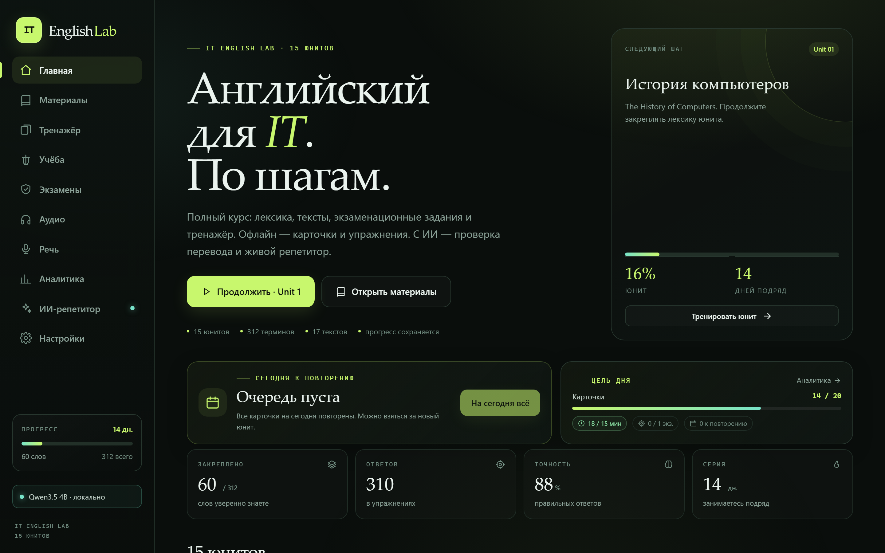
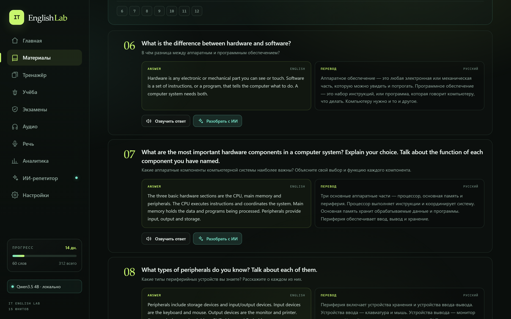
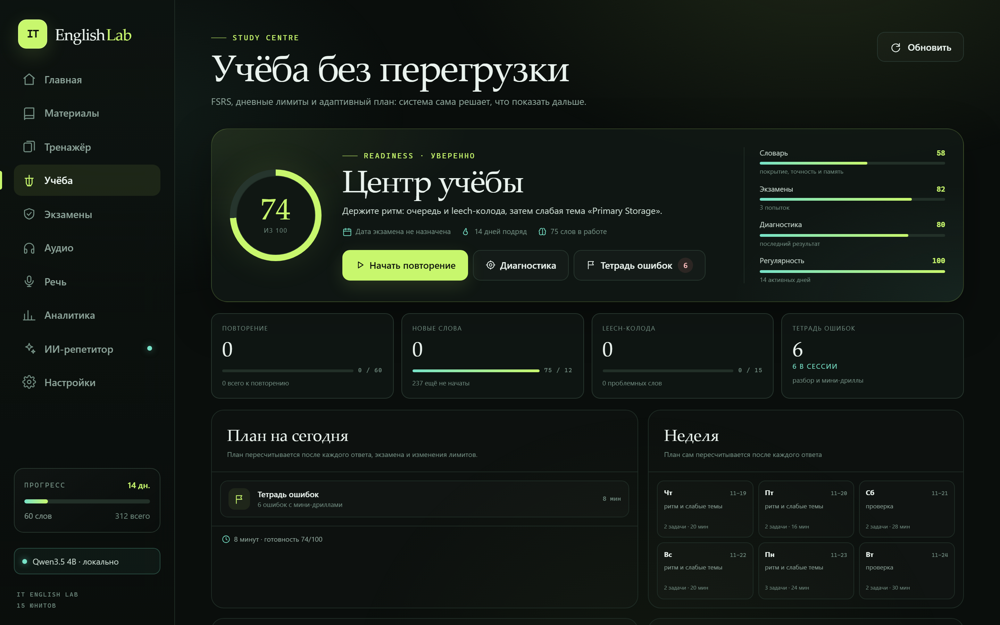
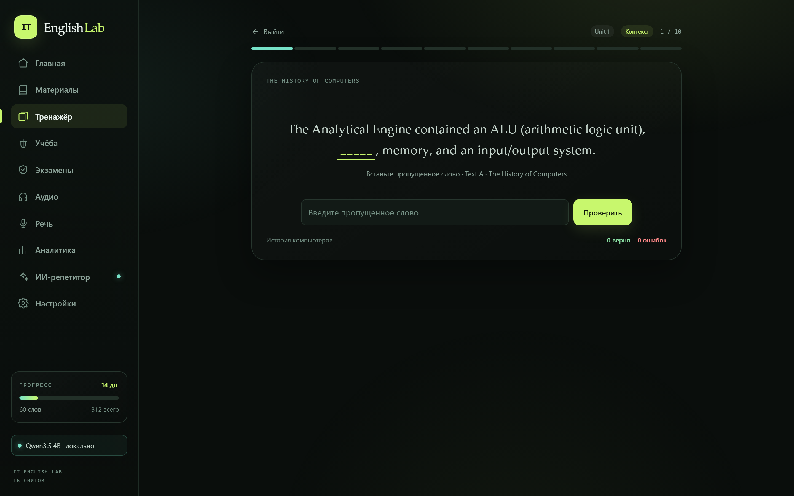
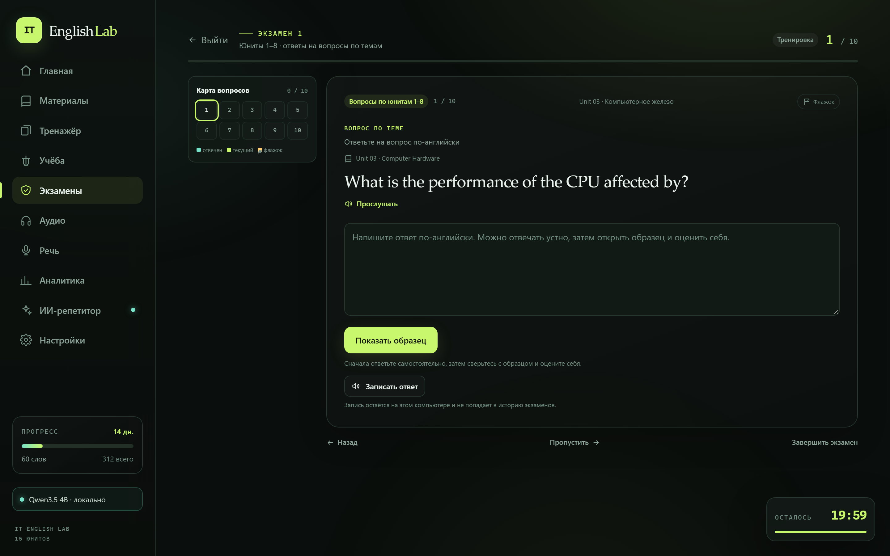
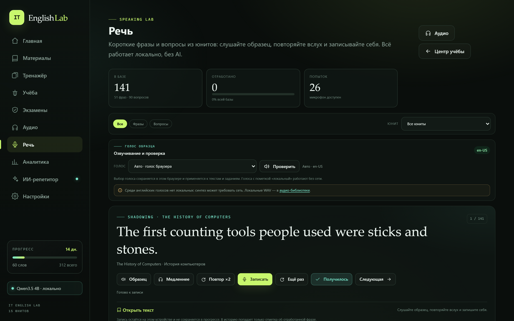
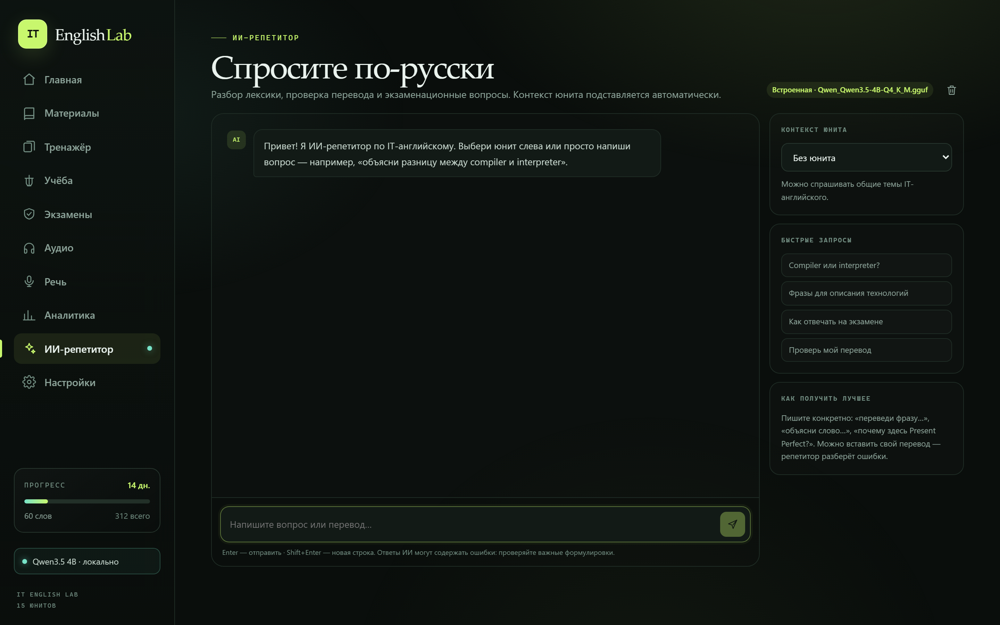
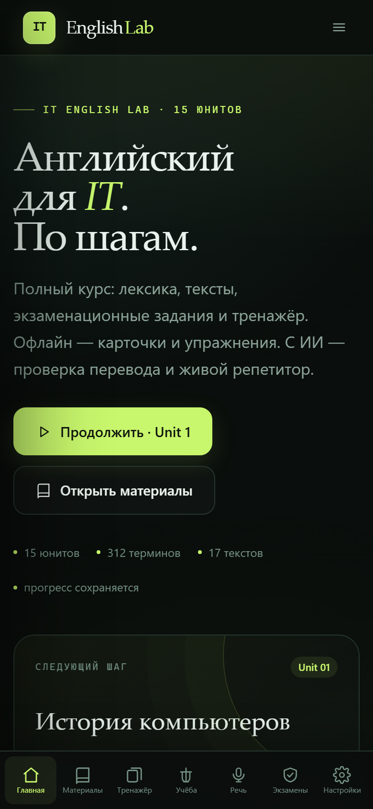
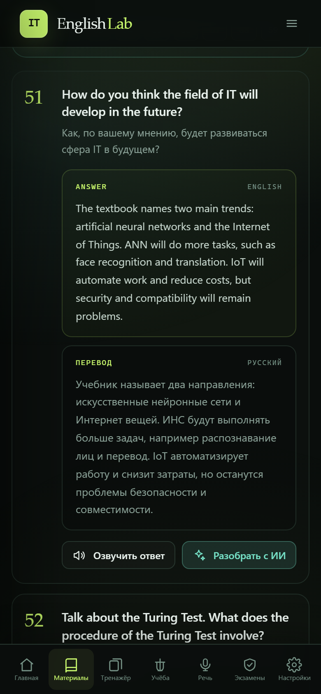
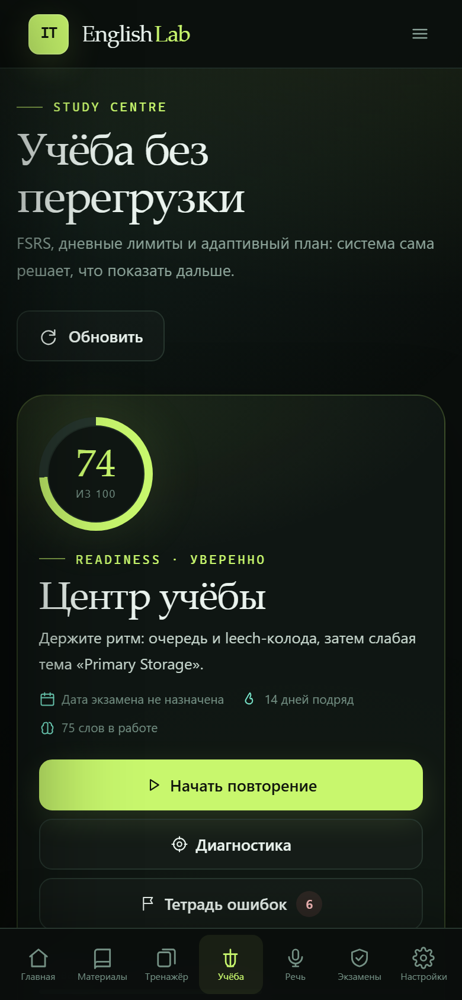

Разрозненные файлы
Термины, тексты и вопросы не связаны с ежедневной практикой.
Подготовка к экзамену по IT-английскому в одном Windows-приложении: 15 юнитов, 312 терминов, 60 экзаменационных Q&A, тренировка речи и повторение по FSRS. Основные функции работают офлайн.
A2–B1 · строго по учебнику ESSENTIAL ENGLISH FOR EXAMS

Словарь, тексты, аудио и экзаменационные вопросы обычно живут отдельно. IT English Lab собирает их в один маршрут и показывает, что делать дальше.
Термины, тексты и вопросы не связаны с ежедневной практикой.
Сложно понять, что забывается и какие темы проседают.
Онлайн-тренажёры неудобны в поездке и на экзамене без интернета.
Реальные экраны текущей сборки. Данные на экранах — демонстрационные, не метрики пользователей.
Продолжить юнит, открыть материалы, увидеть очередь повторения и цель дня.
Каждый экран связан с прогрессом: практика меняет очередь, ошибки возвращаются в повторение, экзамен показывает слабые места.
Вопросы из экзаменационного PDF распределены по 15 юнитам. Под каждым — короткий английский ответ A2–B1 и русский перевод. Темы, которых нет в учебнике, отмечены прямо в ответе.


FSRS, Again/Hard/Good/Easy, leech-колода и дневные лимиты. Очередь сама решает, что показать дальше.

Карточки, выбор, ввод, mixed и cloze из реальных текстов. Ошибки уходят в тетрадь и возвращаются в очередь.

Таймер, карта вопросов, флаги, precheck и разбор ошибок после попытки.

141 промпт, запись, self-assessment и пять локальных WAV-уроков с заданиями.

Qwen3.5 4B Q4_K_M или Q6_K_L работает внутри приложения. Можно подключить API-сервер. Без ИИ приложение полностью работоспособно.
Интерфейс проверен на 390×844 и 360×800: нижняя навигация, safe-area, отсутствие горизонтального скролла. Q&A и учёба остаются читаемыми.



Один Rust-бинарник, локальный HTTP-сервер и файл прогресса. Без аккаунта, облака и автообновлений для основных сценариев.
Windows-сборка запускает локальный сервер и открывает браузер. Прогресс хранится в progress.json, настройки — в settings.json; схема прогресса v3 совместима с предыдущими данными. Есть импорт/экспорт, резервные копии и восстановление. ИИ подключается как локальный GGUF или OpenAI-совместимый сервер; основные функции без него не зависят от сети.
Подготовка к устному экзамену: лексика, тексты, Q&A и тренировка речи в одном месте.
Готовый набор вопросов и ответов, который можно использовать как основу для занятий и устной практики.
Повторение профессиональной лексики и чтения без облака, аккаунта и обязательной подписки.
Windows-сборка без установки: приложение поднимает локальный сервер и открывает браузер. Прогресс хранится на диске.
Демо-сборка для локального запуска. Это не официальный подписанный релиз. Основные функции работают без интернета; ИИ — опция.
Один файл для Windows, без установщика.
Приложение откроет локальный адрес в браузере.
Прогресс сохраняется локально, без облака.